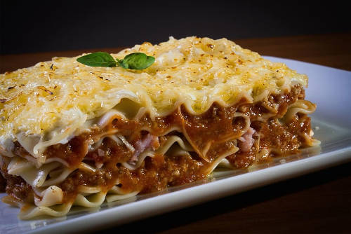

Melhores Receitas
Lasanha

Receita
ingredientes
- 500 g de massa de lasanha;
- 500 g de carne moída;
- 2 caixas de creme de leite;
- 3 colheres de manteiga;
- 3 colheres de farinha de trigo;
- 500 g de presunto;
- 500 g de mussarela;
- sal a gosto;
- 2 copos de leite;
- 1 cebola ralada;
- 3 colheres de óleo;
- 1 caixa de molho de tomate;
- 3 dentes de alho amassados;
- 1 pacote de queijo ralado.
Modo de preparo
- Cozinhe a massa segundo as orientações do fabricante, despeje em um refratário com água gelada para não grudar e reserve;
- Refogue o alho, a cebola, a carne moída, o molho de tomate, deixe cozinhar por 3 minutos e reserve;
- Derreta a margarina, coloque as 3 colheres de farinha de trigo e mexa;
- Despeje o leite aos poucos e continue mexendo;
- Por último, coloque o creme de leite, mexa por 1 minuto e desligue o fogo;
- Despeje uma parte do molho à bolonhesa em um refratário, a metade da massa, a metade do presunto, a metade da mussarela, todo o molho branco e o restante da massa;
- Repita as camadas até a borda do recipiente;
- Finalize com o queijo ralado e leve ao forno alto (220° C), preaquecido, por cerca de 20 minutos.
Historia da Lasanha
A lasanha ganhou destaque na culinária mundial entre o século XIX e XX, quando imigrantes italianos se instalaram em diversos países — incluindo o Brasil — e trouxeram suas deliciosas receitas. Além disso, o aumento no comércio global e as duas Guerras Mundiais fizeram com que mais pessoas fossem à Itália e se apaixonassem por esse prato incrível.
Desse modo, as lasanhas se tornaram um dos principais itens nos restaurantes italianos e um dos primeiros nomes que associamos à culinária do país. Afinal, como não saborear essa incrível combinação de fitas largas e finas de massa fresca, com os deliciosos recheios em camadas e bastante molho para trazer suculência?
Independente do recheio ou do molho específico, já que a receita ganhou inúmeras versões ao redor do mundo, a lasanha é garantia de uma refeição deliciosa.
A origem da lasanha Por mais que tenha se popularizado nos últimos séculos, a história da lasanha começa na Idade Média. O prato surgiu na região de Nápoles, no início do século XIV, mas com formato diferente do que conhecemos hoje: era uma massa de tiras finas, com recheio de queijo, mas fermentada e preparada na água (al dente).
Apenas depois disso é que a tradicional lasagna al forno, em que o próprio molho umedece e ajuda a cozinhar a massa, foi criada — acredita-se que essa receita venha da Emilia-Romagna, mais ao norte da Itália. Assim, la vera lasagna italiana é preparada com um cremoso ragú de carne e molho branco ou pomodoro. A massa fresca deve ser feita com grano duro.
Mesmo tão ligada à culinária e aos restaurantes italianos, a lasanha foi reivindicada pelos britânicos: eles alegaram que